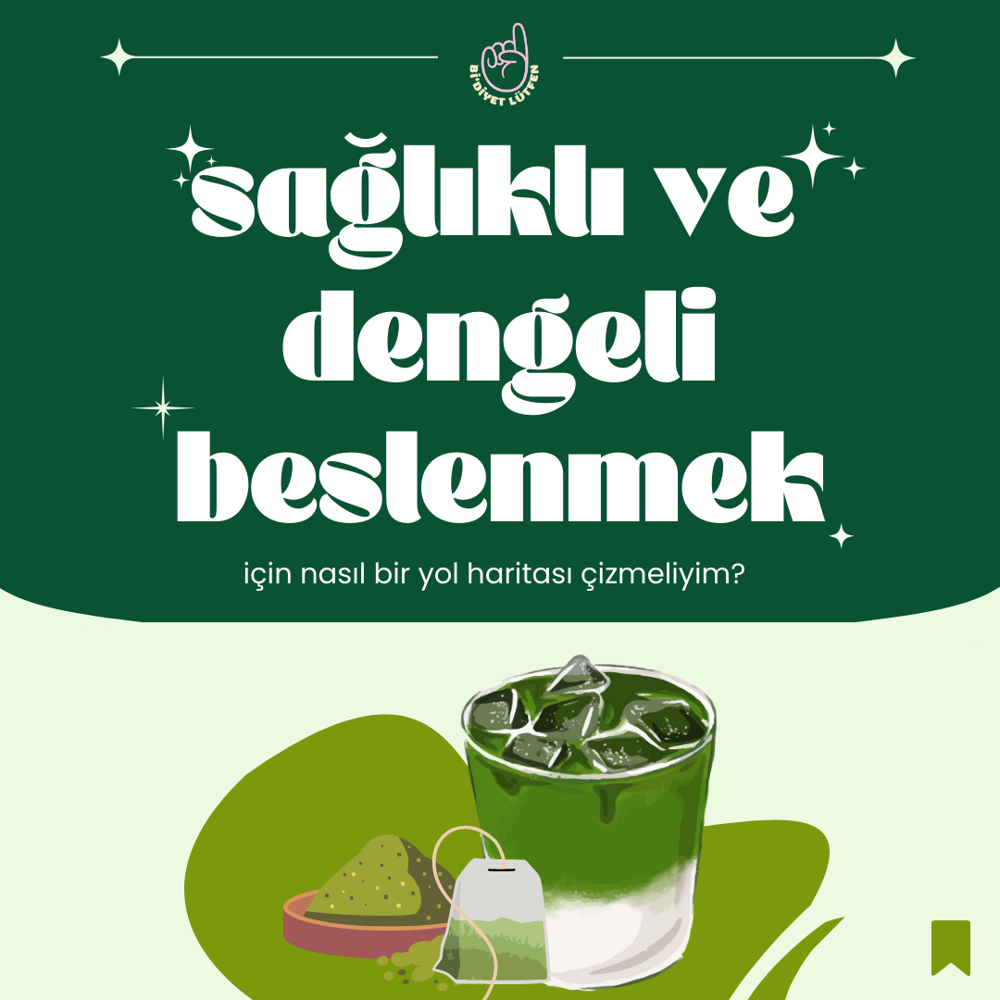

Sağlıklı Beslenme Nasıl Olmalı?
Diyet yapmak denildiğinde aklımıza ilk olarak “kısıtlayıcı” beslenme tarzı, uyulması “zorunlu” listeler ve “mucizevi” tarifler geliyor. Fakat temel ihtiyaçlarımızın başında gelen beslenme, aslında herkes için hayati bir gereklilik. Bu ihtiyacı karşılarken bazen gündelik hayatın akışına kapılabilir bu nedenle sağlıklı ve bize uygun olan beslenme davranışından uzaklaşabiliriz. Bunu düzeltmek için de desteğe ihtiyaç duyabiliriz. Peki ben sağlıklı ve dengeli beslenmeniz için nasıl bir yol haritası çiziyorum?
- Beslenmemizi düzenlerken en önemli ve kalıcı nokta, davranış değişikliği temelli bir yaklaşım izlemek ve davranışlarımızın nedenlerini belirlemek.
- Gece kendimizi bi paket cipsi bitirirken bulduğumuzda burada sorulması gereken soru “Neden bu cipsi yeme ihtiyacı hissettim?” olmalı. “Bir daha asla ağzıma cips sürmeyeceğim.” demek pek gerçekçi bir çözüm yöntemi değil. Yaşadığınız yeme atağının nedenini bulmak, apar topar davranışı düzeltmeye çalışmaktan ya da telafi etmekten daha sağlıklı bir yöntem olur. Davranışı neden gerçekleştirdiğimizi bulduktan sonra o davranışı kontrol etmek daha kolay bir hale gelir.
- Gece kendimizi bi paket cipsi bitirirken bulduğumuzda burada sorulması gereken soru “Neden bu cipsi yeme ihtiyacı hissettim?” olmalı. “Bir daha asla ağzıma cips sürmeyeceğim.” demek pek gerçekçi bir çözüm yöntemi değil. Yaşadığınız yeme atağının nedenini bulmak, apar topar davranışı düzeltmeye çalışmaktan ya da telafi etmekten daha sağlıklı bir yöntem olur. Davranışı neden gerçekleştirdiğimizi bulduktan sonra o davranışı kontrol etmek daha kolay bir hale gelir.
- Davranış değişikliği, alışlanlıklarımızı düzenlediğimiz ve zaman alan bi süreçtir. Belki de doğduğumuz anda geliştirdiğimiz bazı alışkanlıklardan vazgeçmek gerekir, dolayısıyla bu süreç bazen uzun bazen de yorucu olabilir. Önemli olan kendimizi ne kadar kısıtladığımız değil, hedeflerimiz ve hedeflerimizi yerine getirmek için yapabileceklerimizin ne kadar sürdürülebilir olduğudur.
- Bu yüzden diyet yapmak lineer bir doğrultuda ilerlemez, her şeyin tek bir doğrusu ya da bir kez “kaçamak” yapmanın her şeyi çöpe atması gibi bir olgu yok. Zaten bu düşünce yapısının insanın üstünde yarattığı stres ve baskı da cabası.
Ben de bu serüveninizde size yardımcı olmak ve keyifli bir süreç geçirmek için profesyonel destekçiniz olmaya geldim!